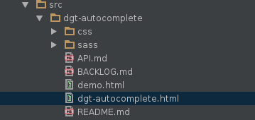

Monolithic frontend
Low levels of productivity
Unable to release patches
Filipi da Silva Fuchter @ Dígitro Tecnologia
Monolithic frontend
Low levels of productivity
Unable to release patches
Web components are based on existing web standards. Allow you to create new custom, reusable, encapsulated HTML tags to use in web pages.
Can be used with any JavaScript library or framework that works with HTML.
W3C Standards
- HTML Templates
- Shadow DOM
- Custom Elements
- HTML Imports
Describes a method for declaring inert DOM subtrees in HTML and manipulating them to instantiate document fragments with identical contents.
Describes a method of establishing and maintaining functional boundaries between DOM subtrees and how these subtrees interact with each other within a document tree.
This document describes the method for enabling the author to define and use new types of DOM elements in a document.
This document defines a way to include and reuse HTML documents in other HTML documents.
Hello
My first native example!.
- createdCallback() Called after the element is created.
- attachedCallback() Called when the element is attached to the document.
- detachedCallback() Called when the element is detached from the document.
- attributeChangedCallback() Called when one of attributes of the element is changed.
webcomponentsjs
https://www.webcomponents.org/polyfills.
Library for creating web components. It is designed to make it easier and faster to make custom HTML elements.
My first Polymer example!.
Custom Constructor
Event listener setup
Data binding
dom-repeat and dom-if
Released 2017-05-15
Elements have been ported to Hybrid mode to be used in both 1.0- and 2.0-based applications.
Shadow DOM and Custom Elements v1.
Web components Library built by Digitro Tecnologia
http://webcomponents.digitro.com.br.Available only at Dígitro's intranet.
Showcase project
Web components project
Web Component Tester
./node_modules/web-component-tester/bin/wct
XVFB
xvfb-run ./node_modules/web-component-tester/bin/wct
module.exports = {
suites: ["test/index.html"],
plugins: {
local: {
browsers: ["chrome","firefox"]
},
"test-reporter": {
reporter: "json",
output: "test_result.json"
}
},
//Executar remotamente
/*webserver: {
port: 2000,
hostname: '192.168.170.104',
},
activeBrowsers: [
{
url: "http://192.168.172.214:4444/wd/hub", // Whatever hub you spun up in step 3.5.
browserName: "internet explorer",
platform: "windows",
takesScreenshot: true,
cssSelectorsEnabled: true,
javascriptEnabled: true,
}
,{
url: "http://192.168.172.214:4444/wd/hub", // Whatever hub you spun up in step 3.5.
browserName: "chrome",
platform: "windows",
takesScreenshot: true,
cssSelectorsEnabled: true,
javascriptEnabled: true,
}
,{
url: "http://192.168.172.214:4444/wd/hub", // Whatever hub you spun up in step 3.5.
browserName: "firefox",
platform: "windows",
takesScreenshot: true,
cssSelectorsEnabled: true,
javascriptEnabled: true,
}
]*/
};
Filipi da Silva Fuchter @ Dígitro Tecnologia